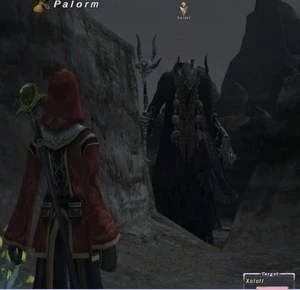

Level 75 reference · Zenith rules
|
Job: Dark Knight, Black Mage, Beastmaster Notorious Monster |
 |

|
Zone |
Level |
Drops |
Steal |
Spawns |
Notes | ||||||
|
80-81 |
1 |
A, L, H, HP | ||||||||
|
HP = Detects Low HP; M = Detects Magic; Sc = Follows by Scent; T(S) = True-sight; T(H) = True-hearing JA = Detects job abilities; WS = Detects weaponskills; Z(D) = Asleep in Daytime; Z(N) = Asleep at Nighttime | |||||||||||
Notes:
 Image source
Image source
- Spawns around (E-7)
- Respawns between 20:00 and 4:00 every 21-24 hours from last death. If not tagged by 4:00, he despawns.
- If everyone dies or is charmed after 4:00 he will despawn.
- If he despawns, he will repop again the next night and keep doing so until he is defeated.
- Uses normal Corse special attacks, plus:
- Casts Tier IV spells and Tier 3 AOE spells such as Thunder IV and Thundaga III
- Blood Weapon: Drains players HP when attacks hit
- Gala Macabre: AoE Charm
- Danse Macabre: Single target Charm
- Final Retribution: AOE attack for about 500+ damage
- Summons Xolotl's Sacrifice and Xolotl's Hound Warrior during the battle. They can be slept with Lullaby. He will resummon them if they are killed.
- Killable by 6 level 75's or 2 Beastmasters or 2 Summoners in combination with 2 kiters.
- A common strategy is to fight Xolotl with Charmed pets (because he can't charm them) while kiting his summons.
- Xolotl's Sacrifice and Xolotl's Hound Warrior will quickly build resistance to Lullaby, however, Xolotl can be slept with Lullaby once after each Charm, after which he builds resistance.
- Zoolater Hat is a very common drop, Bandomusha Kote drops around 20% of the time, and Perseus's Harpe seems to have a low drop rate (around 5%).
Adapted from Eden Wiki: Xolotl · Contributors and history · CC BY-SA 4.0. Revision 43286. Layout, links and optional background text adapted for Zenith.